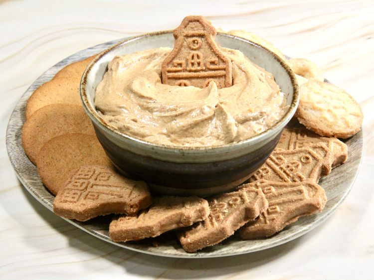

Gingerbread Dip

Home
Ingredients
- 1 (8 ounce) package cream cheese, at room temperature
- 2 teaspoons ground ginger
- 1/2 teaspoon ground cinnamon
- 1/4 teaspoon ground cloves
- 1 pinch salt
- 1/2 cup marshmallow fluff
- 2 tablespoons molasses
- 1/2 cup finely crumbled gingersnaps
Steps
- Place cream cheese in a bowl; add ginger, cinnamon, cloves, and salt, and beat with an electric mixer until light and fluffy.
- Add marshmallow fluff and molasses and blend until creamy and smooth. Fold in gingersnap cookie crumbs until well combined.
- Store in an airtight container in the refrigerator, and serve with your favorite cookies or fruits.